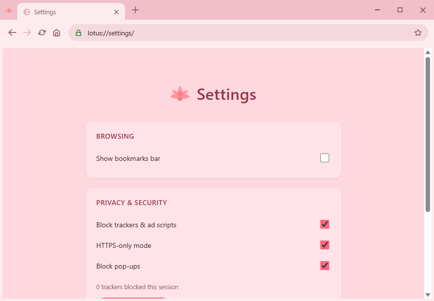
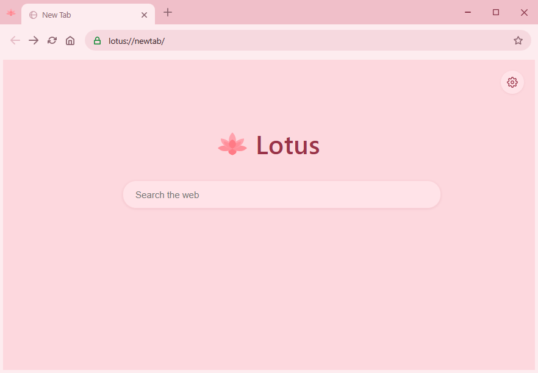

Lotus is a fast, quiet browser for Windows - tabs, bookmarks and downloads, without the clutter. Searches run on DuckDuckGo, so they aren't tracked back to you.


New tab search and privacy settings, both built in
Free · Windows 10 & 11 · release notes
By downloading, you agree to the Terms of Service and Privacy Policy.
Drag to reorder tabs, and every link opens in the window you already have - Lotus never spawns a second copy of itself.
The address bar and new tab page search with DuckDuckGo, and known tracker domains are blocked automatically wherever you browse.
Files land in a Chrome-style shelf at the bottom of the window, with live progress instead of a popup.
Star a page to pin it to the bookmarks bar, and jump back to anything you've visited from a searchable history panel.
Search text on the current page, zoom in or out, and reach view-source or dev tools when you need them.
Register Lotus as a browser option in Windows settings, and it'll ask for permission before a site can use your camera, mic or location.